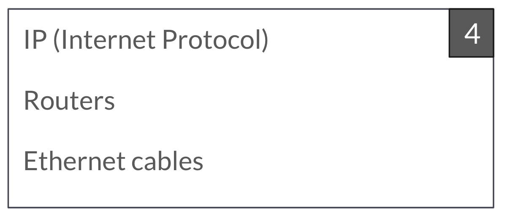

Platform Architecture and Infrastructure
Teamwork Group 4

Explaining and connecting the 3:
IP addresses are used for identification and location
routers enable communication between different networks by forwarding data based on IP addresses
Ethernet cables physically connect devices within a local network, allowing data to be exchanged using MAC addresses
IP adresses represent the individual devices (eg Mobile Phone) which connects to the ROUTER which sends the signal via ETHERNET CABLE
Computer Networking and the Internet would not be able to exist without them